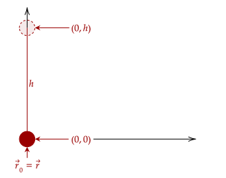
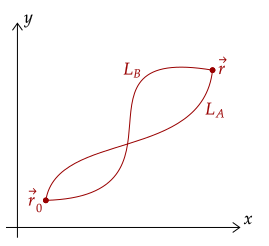
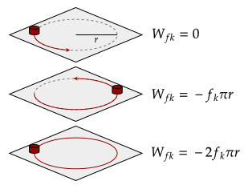

Previously, we noted that the change in potential energy is equal to the negative work done by a force.
A special case occurs when the initial and final position end up at the same place. For instance, take that of a projectile being projected straight upwards, landing back at where it started, here, the initial and final position are at the same position.

Recall that we made the potential energy as a function of position. Since we input the same value (because the initial and final position are the same) two times, this must be equal to zero. However, this also means that the work done must also be zero.
This property must arise from the work, and not of the potential energy. More specifically, the force doing said work. Thus, if the force does not hold this property, there can be no potential energy function that can be created for that force. Such a force that satisfies this is a conservative force.
To further investigate this, let's return to the line integral definition for work. Recall that this integrates over the path of distance; thus, it accounts for the infinitely many paths between initial to final position.
This is the characteristic we want to investigate. Now, we will break the integral into two parts. First, let's consider the trip of the object from initial to final position. Then, we consider its trip from final to initial position. Of course, we don't assume that it follows the same path for the first and second trip. In fact, there are infinitely many.

Mathematically, we write down the two trips as follows. The first integral represents the first trip from initial to final position, integrating over some path from those two positions, then the second integral does the same for the final to initial position.
This means that the work done during the return trip must equal that to the work done in the initial trip.
Problem 1a
Show that weight is a conservative force.
Solution
We write out the bottom formula, then we will use the component form of the dot product.
Once again, the horizontal component of the weight drops out, as weight has no horizontal component.
Evaluating the integral, we arrive that they are equal. This shows that weight is a conservative force.
Thus, given a conservative force, we can write that the integral of the force over a closed loop is zero; the work is zero over a path which starts and ends where it begins. We have a special symbol for this, shown below.
Question 1
An object is acted upon by two conservative forces, ending where it started. Thus, what is the value of the work done by the two forces? In other words, what work is done in the following equation?
Answer
We break the integral into two.
Notice how this is basically asking us to evaluate the work done by a force over a closed loop. Since these two are conservative, the entire thing becomes zero.
Another thing we can glean from this fact is the following. Let's say that the object takes two different paths to go to the final position but takes the same path to return. In that case, it follows that the work done over the two different paths are equal.
In other words, the work done by a conservative force does not depend on the path taken. We've seen this property before, and we've given a name to it. These types of forces are path-independent.
Problem 1b
Show that the force of kinetic friction is not a conservative force. Note that the work done is based on the path length, given by .
Solution
We will first derive the work done by kinetic friction again. Note that we've done this before when we first discussed the line integral for work.
We use the definition of the dot product given the angle between force and displacement since we always know that kinetic friction points away from the displacement, so θ = 180°.
Since the cosine of 180 degrees is negative one, it makes the entire thing negative. Then, we take out the constant magnitude kinetic friction.
We then evaluate from the initial to the final position.
This is basically telling us then to just sum up all the positions along the path, which gives us the path length.
We've arrived at this result before. Now, to interpret it, note that since the length of any two paths from the initial to final position can vary, the work of the kinetic friction changes based on the length. Thus, it is non-conservative.
Another way to put it is that kinetic friction varies based on distance, and not the displacement. Kinetic friction varies based on the path length, as shown above. In the experiment below, a disk is rotated in a circle of radius .

After one whole rotation, the potential energy tells us it should be zero; the initial and final position are the same. However, the work done by kinetic friction isn't zero. Thus, we can't make a potential energy function for kinetic friction; it is a non-conservative force.
Question 2a
(HRK Q12.1) Consider the one-dimensional force shown below, where its magnitude is given by a function . Is it possible to determine whether this is a conservative force without any additional information? If so, is it conservative?
Solution
All forces that act only in one dimension are conservative; in one dimension, the only way to go from initial to final position is via going straight there. Of course, the distance can go backwards but ultimately it will end up traversing the same path.
Thus, without any more information, we can conclude that such a force is conservative.
Question 2b
(HRK Q12.2) Consider the two-dimensional force shown below, where its magnitude in the x-component and y-component are given by the functions and . Is it possible to determine whether this is a conservative force without any additional information? If so, is it conservative?
Solution
We do not have enough information. There are an infinite amount of paths from initial to final position in two-dimensions, so we can't say for certain that the given force is conservative.